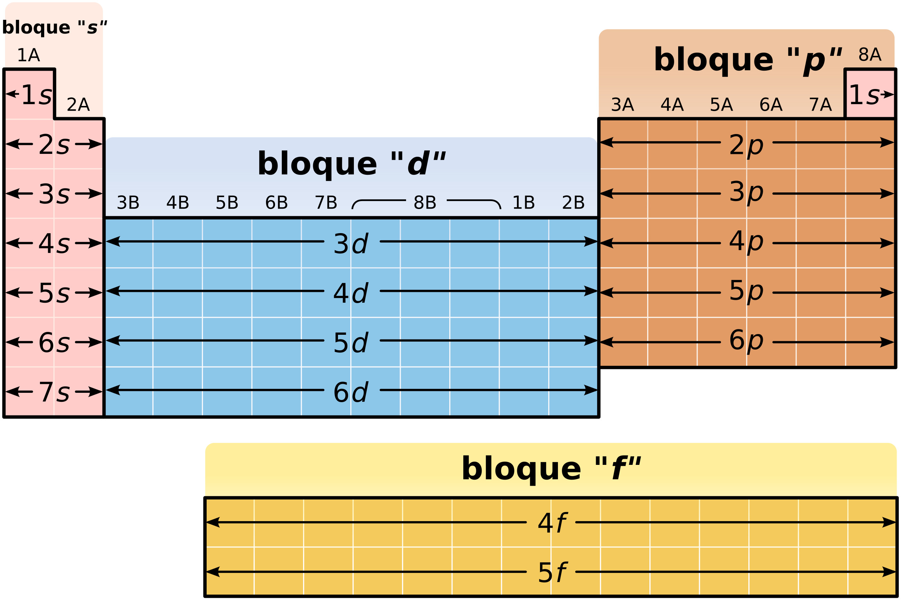

¿Qué son las propiedades periódicas?
Las propiedades periódicas son características físicas y químicas de los elementos que varían de forma regular a lo largo de la tabla periódica. Estas variaciones se deben principalmente a la configuración electrónica de los átomos.
El estudio de estas propiedades permite explicar el comportamiento de los elementos y predecir su reactividad química.
Hardwigg, translation in Spanish by me, Basquetteur, CC BY-SA 3.0, via Wikimedia Commons
{kind=link}
Principales propiedades periódicas
Radio atómico
El radio atómico mide el tamaño de un átomo. Aumenta al descender en un grupo debido al aumento del número de capas electrónicas y disminuye a lo largo de un periodo por el incremento de la carga nuclear efectiva.
Energía de ionización
Es la energía necesaria para arrancar un electrón de un átomo en estado gaseoso. Esta propiedad aumenta de izquierda a derecha en un periodo y disminuye al bajar en un grupo.
Afinidad electrónica
Indica la energía liberada cuando un átomo neutro gana un electrón. Los no metales suelen presentar valores elevados de afinidad electrónica.
Electronegatividad
La electronegatividad es la capacidad de un átomo para atraer electrones en un enlace químico. Aumenta hacia la derecha y hacia arriba en la tabla periódica.
Estas propiedades están relacionadas entre sí y permiten comprender el tipo de enlace que formarán los elementos.